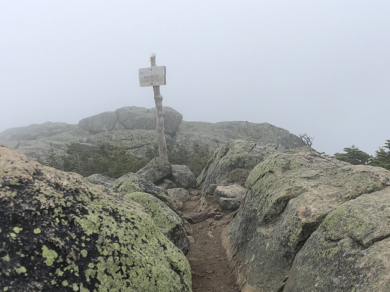
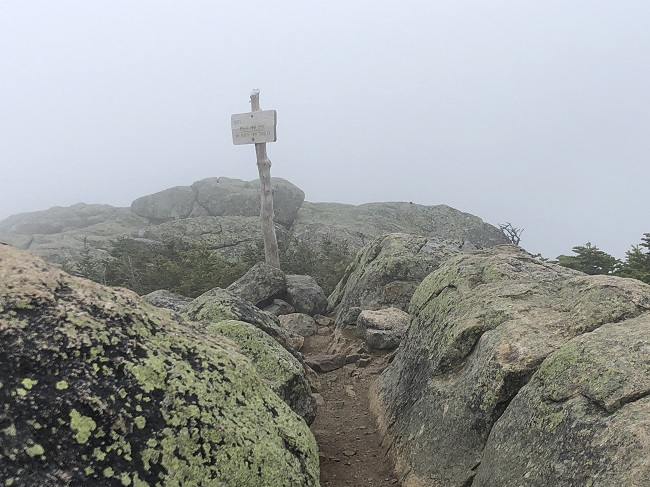

Pemi Loop
The weather forecast is mostly good for the next few days. I am volunteering 3 days a week as a Lead Trailhead Steward for the White Mountains National Forest in New Hampshire for the summer. These are my days off and I am going to be doing the Pemi Loop as a 3-4 day backpacking trip.
I will begin the trail at the Lincoln Woods trailhead on the Kancamagus Highway (The Kanc) near Lincoln NH. The trail is over 30 miles and is beautiful and incredibly grueling terrain. Over 9000 feet of elevation gain and 8 summits from the list of 48 4000 footers. Plus close enough to a few other summits along the trail for side hikes. Even though I am doing this a a multi day backpacking trip, there are many hikers who challenge themselves and do this as a day hike. I know I am not capable of that incredible feat. A person needs to know their limits!
I chose to do the Pemi Loop counter clockwise. The first 5 miles or so is basically flat, until you start the ascent up to Bond Cliff. I must admit this is the 1st time I have hiked any of the Bonds. I absolutely loved it here. I didn't want to leave. The views are spectacular. And you are in the wilderness with no roads or civilization in sight. Sigh.... Then I hiked up to Mt. Bond, then over to Guyot tentsite for the night. There are designated places where people are allowed to spend the night in the White Mountains. This tentsite costs $10 for the night. Well worth it!
I woke up at sunrise the next morning and did a side hike to West Bond before I even broke down my camp. Great spot for my trail bar for breakfast. I'm tired today so just gonna pace myself. No rush. I'm here to have fun. After breaking down my camp, I set off up to Mt. Guyot. The hike over to South Twin is fairly easy overall. Coming down towards the Galehead Hut is another story. Long, bouldery and steep. Hard on the knees, like so many sections of these mountains. I thought I heard a moose crashing through the brush up ahead. It was loud. Nope, when I turned the corner I saw the Galehead Hut staff was stripping roof shingles. Hahaha, silly me!
For anyone who doesn't know, the Galehead hut is one of many huts in the White Mountains. Staffed and maintained by the AMC (Appalachian Mountain Club). These huts are basically a hotel in the mountains, accessible by foot only. Each hut is approximately a days hike apart from each other. You pay to stay here, and you get a bunk, dinner and breakfast. The hut crews are awesome! Even if you don't have reservations to spend the night at one of the huts, if you are hiking by one, they welcome you to stop in, use the bathroom, refill your water bottles and sometimes they have coffee or snacks or soup for sale too.
Anyway, back to my hike. I took the side trip over to Galehead Mountain. Then I continued on over to the Garfield ridge tent site. My original plan was to continue past here, but it was 2:30 and the weather was forecast for severe thunderstorms in a couple hours. I decided not to get caught up on the ridge, so I spent the night here.
The rain past overnight, but the mountains were in the clouds. Zero view from Mt. Garfield. By the time I started approaching Mt. Lafayette (my favorite spot), the clouds were lifting and the sun was coming out. Winds were steady so I needed my windbreaker. After taking a nice long lunch at the summit, I continued along the Franconia Ridge Trail to Mt. Lincoln and Little Haystack. I took this time more as a slow stroll. The weather was awesome and the views never get old. I spent the night at the Liberty Spring tentsite.
My last day was sunny and warm. Two more mountains to go. Mt Liberty, then Mt. Flume. I had never been to either of these 2 summits before either. The descent from Mt. Flume was a steep one in places. Lots of ladder/stairs. It felt good to reach the trailhead at Lincoln Woods. I did it! It was on my list of things I really wanted to do. Tired, but well worth every step of the way!